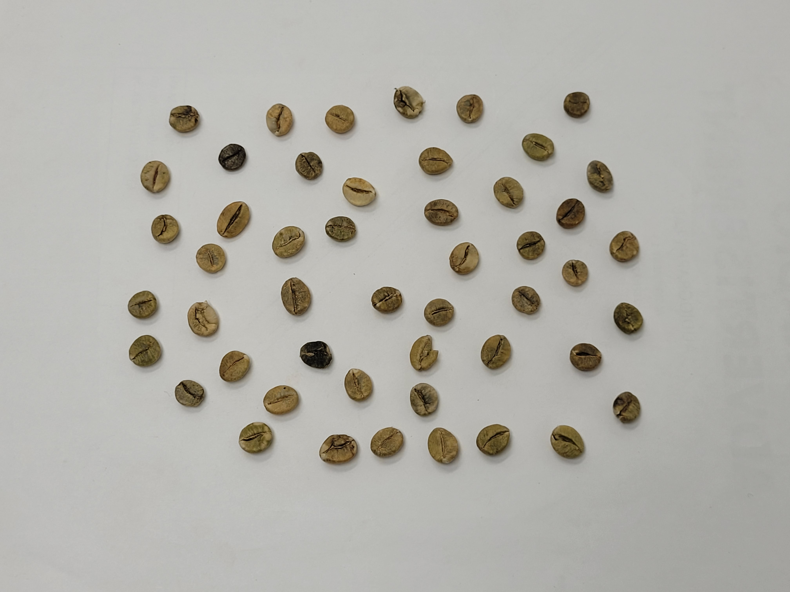
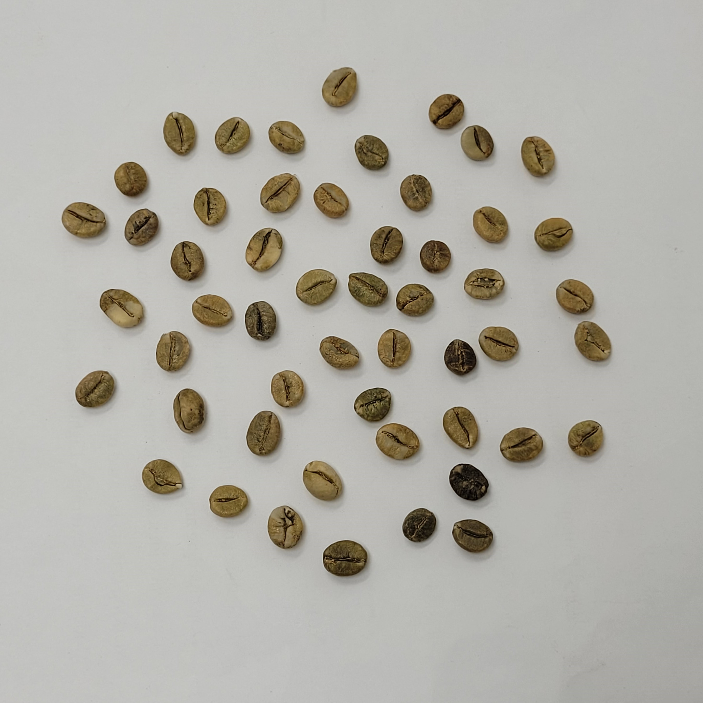
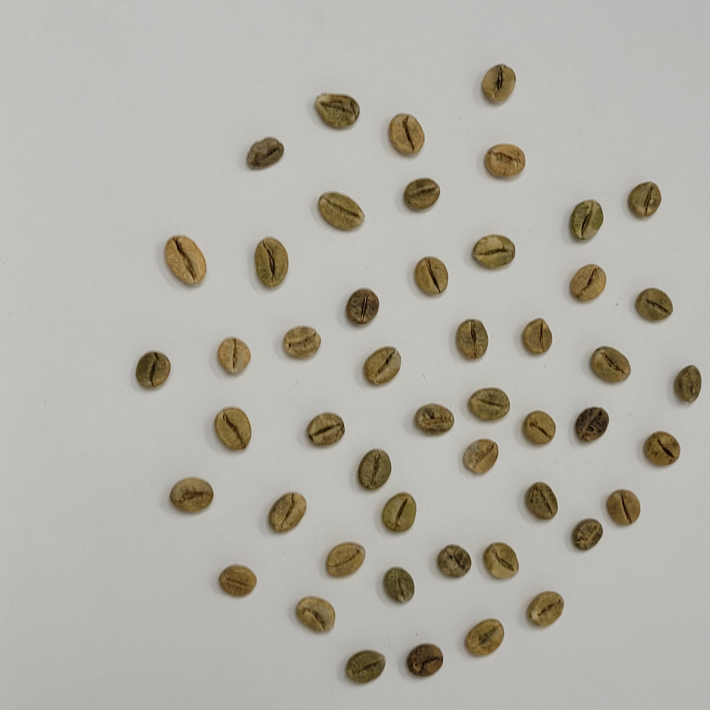
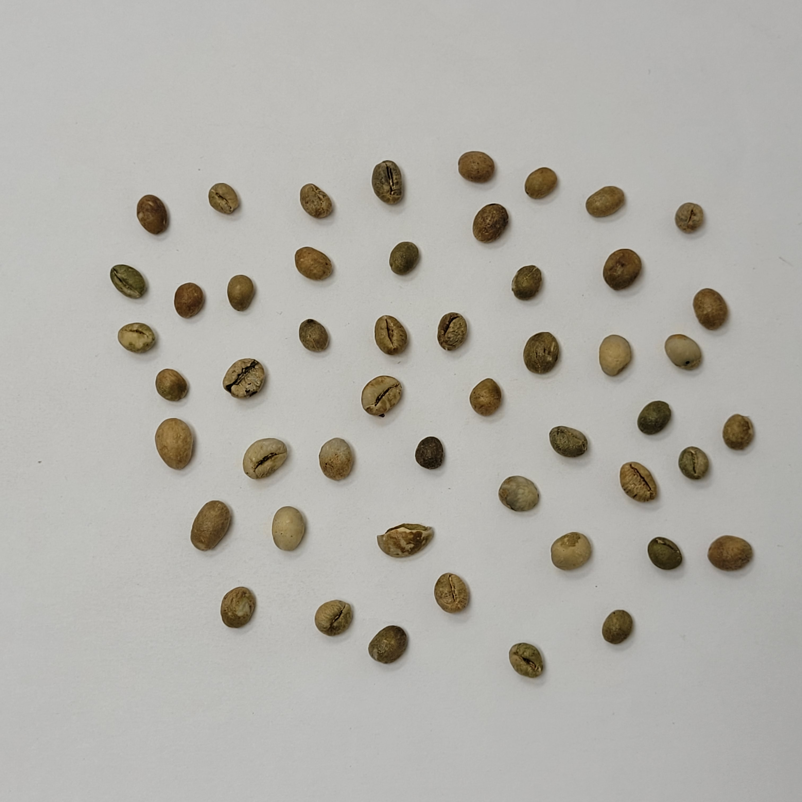
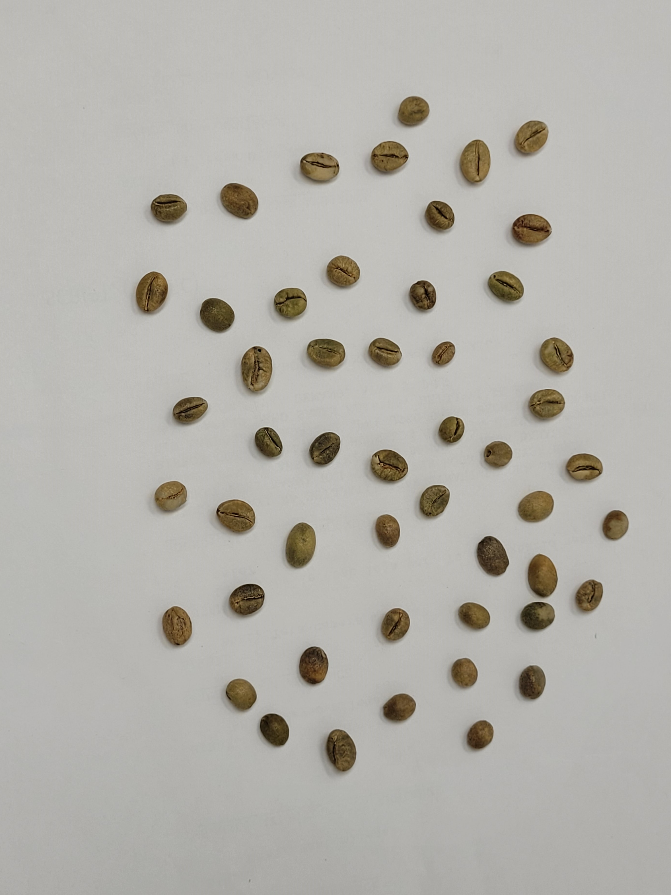
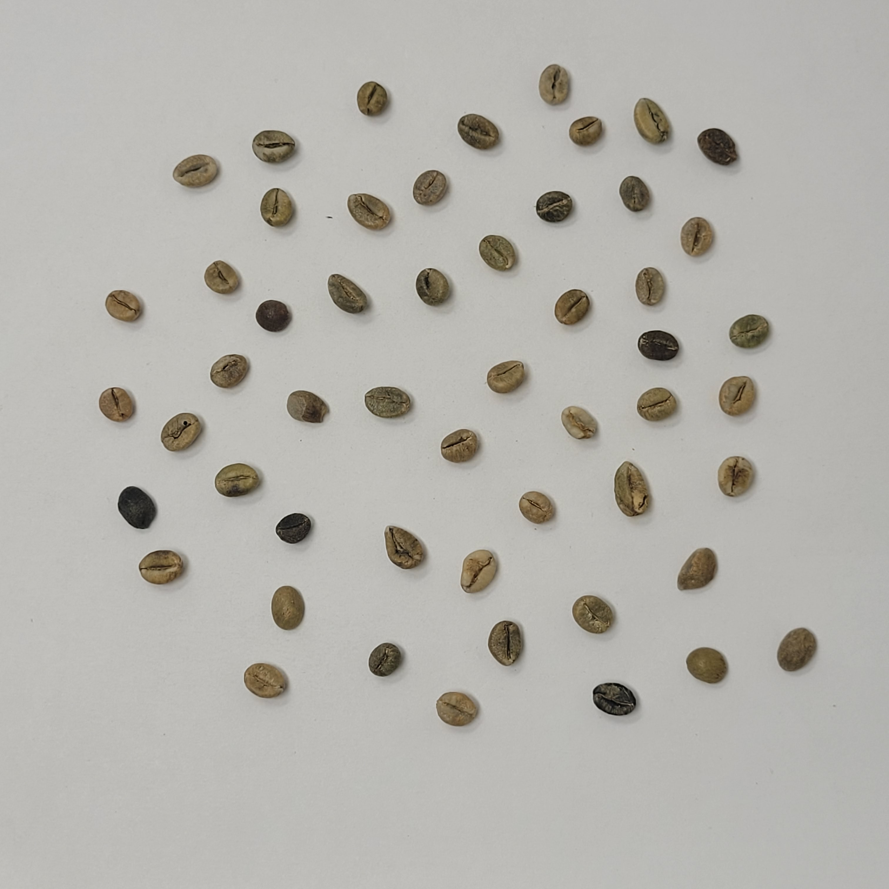
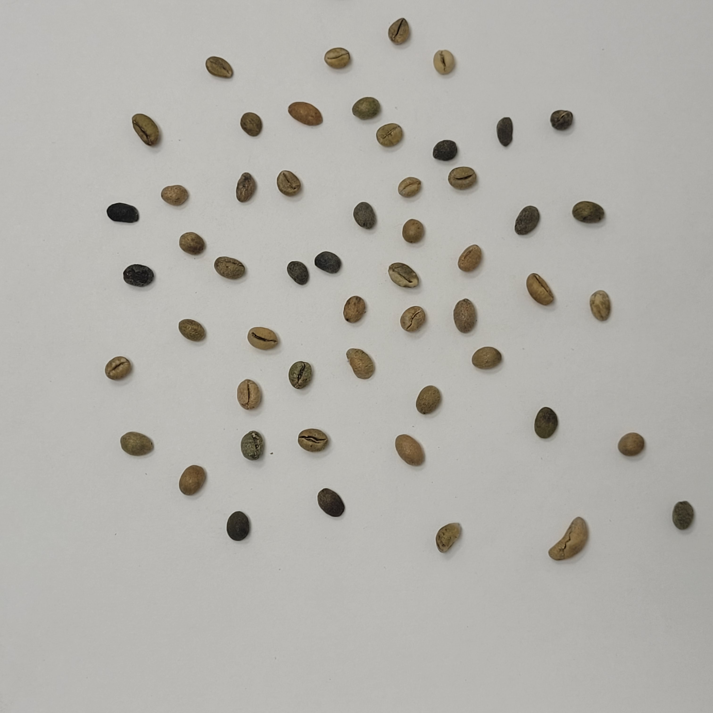
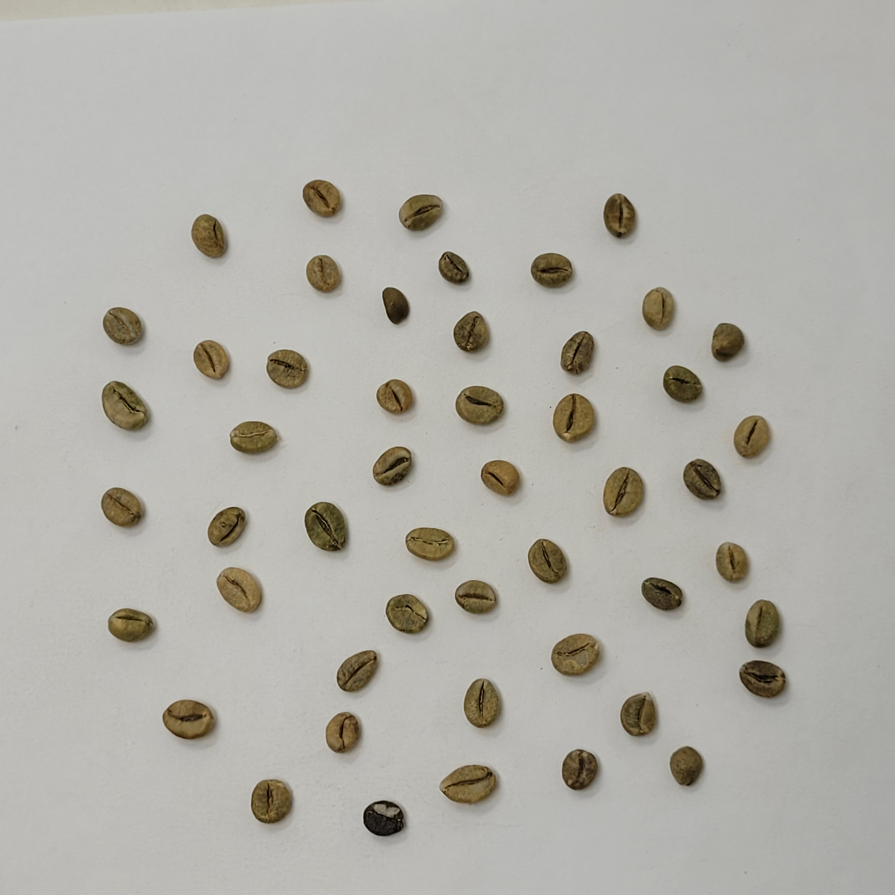
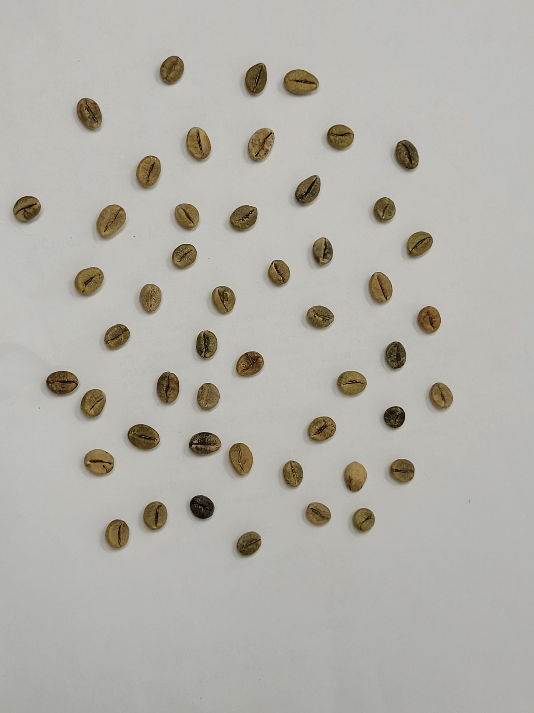

Drag & Drop an image here
or
Upload and analyze an image to see results here.
1. Grading Standards & Dataset
- Source: CBD_Coffee Bean Dataset (Wayanad, Kerala, India).
- Dataset Scale: 16,285 single-bean images cropped from 450 raw bulk images.
- Quality Grades (Robusta): Evaluated across 7 distinct uniform tiers:
- AAA & AA: Premium specialty classes featuring maximum uniformity and high aesthetic consistency.
- A: High-grade commercial quality complying strictly with standard sizing.
- C & Bits: Lower quality tiers containing pronounced physical defects or broken beans.
- PB-I & PB-II: Peaberry classes distinguished by unique physical rounded geometry.
2. Processing Pipeline
Our automated computer vision system analyzes the coffee beans using a traditional, highly interpretable Machine Learning workflow rather than resource-heavy Deep Learning:
- Step 1: Object Detection & Localization
- Uses Global Adaptive Thresholding (iterative threshold search on the HSV Saturation channel) to perfectly identify single beans against light backgrounds under varied illumination.
- Extracts target regions into fixed 208×208 pixel Regions of Interest (ROI) to preserve the true scale of the physical bean.
- Step 2: Local Segmentation & Contouring
- Applies local Otsu Segmentation on each isolated bean followed by Morphological Opening/Closing to clear random pixel noise.
- Uses a mathematical Convex Hull wrapper to precisely smooth the boundary while evaluating defects via "solidity" changes.
- Step 3: Comprehensive Feature Extraction (2,567 Dimensions)
- Geometric Features (5D): Measures Circularity, Aspect Ratio, and Solidity directly from the contour shape.
- HOG (2,352D): Captures surface cuts, cracks, and internal groove structures from the natural texture.
- Color Histogram HSV (192D): Graphs color distribution strictly inside the bean mask, omitting background color.
- LBP (18D): Evaluates minute skin micro-textures like fungal spots or surface roughness.
3. Model Architecture & Selection
- Two-Phase Pipeline:
- Phase 1 (Feature Selection): Trains an initial gradient boosting model using native SHAP Importance values (Gain criterion) to filter out noisy vectors down to the Top-K features (K = 500).
- Phase 2 (Final Inference): Trains the optimized, compact classifier with Early Stopping to completely mitigate overfitting.

Grade AAA
Premium specialty class featuring maximum uniformity and high aesthetic consistency.

Grade AA
Premium specialty class featuring high uniformity and aesthetic consistency.

Grade A
High-grade commercial quality complying strictly with standard sizing.

Grade PB-I
Peaberry class distinguished by unique physical rounded geometry.

Grade PB-II
Peaberry secondary class distinguished by smaller rounded geometry.

Grade C
Lower quality tier containing pronounced physical defects.

Bits
Broken beans and significant fragments.

Bulk
Inconsistent mixed class of coffee beans.

A-Bulk
Mixed class predominantly containing Grade A size variations.
Session Data Table
Below is the evaluation log of your current web testing session.
| Timestamp | Image Thumbnail | Total Beans Detected | Grade Breakdown |
|---|---|---|---|
| No analyses performed yet in this session. | |||
Core Performance Benchmarks (Test Set)
Our Two-Phase Gradient Boosting framework drastically outperforms traditional machine learning approaches:
| Model Configuration | Test Accuracy | F1-Score | Inference Latency |
|---|---|---|---|
| Two-Phase CatBoost (Top-500) | 86.10% | 86.04% | 0.0276s |
| Two-Phase XGBoost (Top-500) | 84.82% | 84.74% | 0.1781s |
| Two-Phase LightGBM (Top-1000) | 84.74% | 84.67% | 0.5558s |
| Support Vector Machine (RBF) | 83.85% | 83.86% | 30.5582s |
| Random Forest Classifier | 79.10% | 78.87% | 0.2119s |
About Us
We are a group of students from the University of Information Technology, Vietnam (UIT). This application serves as our university project; however, we are also deeply committed to the mission of refining coffee bean quality control within the agricultural industry.
Driven by this goal, we have developed a comprehensive and efficient coffee bean quality ranking system that is highly user-friendly. Welcome to our demonstration website! We invite you to test your own coffee beans with our machine learning model. With just the click of a button, you can evaluate the quality of your coffee batches with an accuracy of up to 86%.
Looking ahead, we are eager to bring this system to life by integrating it into sorting machinery across domestic coffee processing factories. Backed by our ongoing improvements and our passion for boosting the domestic industrial economy, we aim to make a lasting impact.
Contact Us:
24521087@gm.uit.edu.vn
24520682@gm.uit.edu.vn
24521075@gm.uit.edu.vn
24521229@gm.uit.edu.vn
User Feedback
Found a false positive defect or an incorrect grade? Let us know!